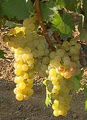

Muscat de
Rivesaltes AOP


⟹ Vins & Spiritueux ⟸
L'histoire du Muscat de Rivesaltes s'inscrit dans celle, plus de deux fois millénaire, de la vigne en Roussillon. Les cépages de la famille des muscats, réputés depuis l'Antiquité pour leurs raisins très aromatiques, ont trouvé dans l'amphithéâtre roussillonnais — ouvert sur la Méditerranée, protégé par les reliefs et balayé par la tramontane — des conditions particulièrement favorables. Leur parfum naturel et leur richesse en sucre les ont très tôt destinés aussi bien à la consommation du raisin qu'à l'élaboration de vins doux.

Au Moyen Âge, l'histoire des muscats roussillonnais rejoint celle du mutage. La tradition associe à Arnaud de Villeneuve (Arnau de Vilanova), médecin et savant catalan de la fin du XIIIe siècle, la formalisation d'une méthode consistant à ajouter de l'alcool vinique au moût en fermentation. En stoppant l'activité des levures, cette opération conserve une partie du sucre du raisin tout en stabilisant le vin. Elle devient la signature technique des vins doux naturels du Roussillon.
Pendant des siècles, les muscats sont produits sous plusieurs noms locaux correspondant aux différents secteurs viticoles du département. La naissance du système français des appellations au XXe siècle conduit d'abord à reconnaître séparément plusieurs dénominations. Puis producteurs et négociants recherchent une identité commune plus lisible. Cette évolution aboutit en 1956 à la reconnaissance de l'appellation Muscat de Rivesaltes, nom qui rassemble la production sur une aire particulièrement vaste du Roussillon et de communes limitrophes de l'Aude.
Le choix de Rivesaltes n'est pas anodin. Située au cœur des voies de circulation de la plaine et proche de Perpignan, la commune a longtemps constitué un centre important de vinification, d'élevage et surtout de négoce des vins doux naturels. Son nom devient ainsi l'étendard collectif d'un muscat dont l'aire actuelle couvre 89 communes des Pyrénées-Orientales et 9 communes de l'Aude, entre Méditerranée, Espagne, contreforts du Canigou et Corbières.
L'une des singularités historiques de l'appellation est d'avoir conservé deux grands visages du muscat : le muscat à petits grains, réputé pour sa finesse florale et citronnée, et le muscat d'Alexandrie, plus ample, aux accents de fruits mûrs et exotiques. Le Muscat de Rivesaltes est le seul vin doux naturel français dont l'appellation permet cette association de deux variétés de muscat, utilisées seules ou assemblées selon les terroirs et les choix du vigneron.
Une tradition plus récente a remis en lumière le plaisir du vin dans sa jeunesse : la mention « Muscat de Noël » distingue un Muscat de Rivesaltes mis en bouteille très tôt, avant le 1er décembre suivant la récolte. Elle renoue avec l'idée d'un vin de fête dégusté peu après les vendanges, lorsque les arômes de raisin frais, d'agrumes et de fleurs sont les plus éclatants. Entre héritage médiéval du mutage, histoire du négoce rivesaltais et diversité des deux cépages, l'appellation demeure aujourd'hui l'une des grandes expressions de la culture des vins doux naturels catalans.
Muscat jeune : robe or pâle, arômes explosifs de pêche, de citron, de mangue et de menthe fraîche ; à boire dans les deux ans suivant la récolte pour préserver son exubérance.
Assemblage des deux muscats : le muscat à petits grains apporte finesse et agrumes, le muscat d'Alexandrie ampleur et notes de rose et de raisin frais.
Muscat de Noël : mention autorisée depuis 2011 pour des cuvées bénéficiant d'un élevage un peu plus long, commercialisées pour les fêtes de fin d'année.
Muscat vieilli : plus rare, il évolue vers une robe ambrée et des notes miellées d'abricot sec et d'agrumes confits.
Le vaste terroir du Muscat de Rivesaltes se déploie entre mer, plaine et contreforts pyrénéens.
Rivesaltes, qui donne son nom à l'appellation, où plusieurs maisons de négoce historiques ouvrent leurs chais à la visite.
Le marché de Perpignan, l'occasion de goûter un verre de muscat frais accompagné d'un melon de saison, comme le veut la tradition catalane.
Les caves de la plaine du Roussillon, entre Rivesaltes et Salses-le-Château, où le muscat côtoie les vignobles d'autres appellations doux naturels.